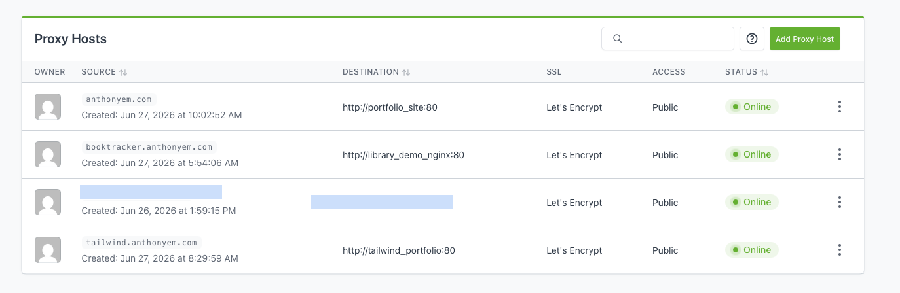
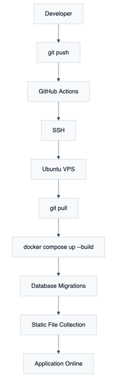
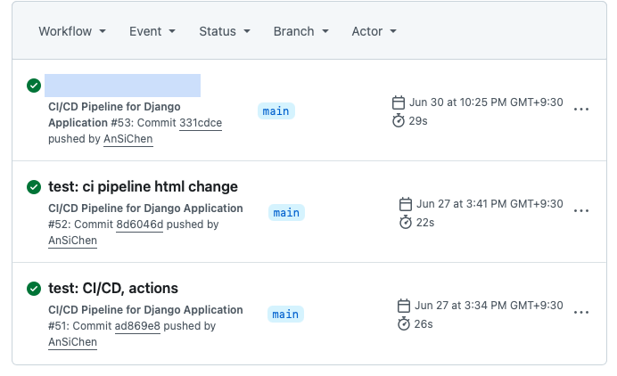

Over time, my portfolio has grown longer. Unsurprisingly, so has the number of applications I need to deploy and maintain. At first, it was manageable, but soon, I found myself repeating the same tedious tasks across multiple repositories, copying files from one project to another, and trying to remember which "unique" approach I used for the last one. Long story short: maintaining a growing collection of personal projects with a different, home-brewed process for each one became an unsustainable mess. I told myself there had to be a more efficient way, and it turns out there is.
The goal was to create a workflow for projects that, sometimes don't even share the same language or technology stack. It's the "same same but different" approach to infrastructure.
What I ended up with was a self-hosted deployment platform. Built with: Docker, Docker Compose, GitHub Actions, SSH, and Nginx Proxy Manager, and they ended up fitting well together.
In this case study, I'll walk you through the architecture, explain the reasoning behind the tech I chose (and the tech I didn't), discuss how I automated deployments, and share the lessons I learned while building and operating my own infrastructure. The phrase "owning your infrastructure" sounds nice until you're the one who has to fix it at 3 a.m., and nothing works, and why is GitHub throwing an error, and why is there a 500, and... Okay, sorry. As I was saying, I've found it's worth it.
Before provisioning the server or writing a single Dockerfile, I needed to answer a simple question: What should my platform achieve? I settled on five principles that would guide every decision.
Consistency: Regardless of framework or programming language, using Docker and Docker Compose across applications means each project can be deployed, updated, and maintained using the same workflow. No more "How did I do that last time?"
Independence: Each application runs within its own container, managed by a dedicated Linux user account. Simplifies permissions, and reduces the chance that one project's update will break another's.
Reusability: New applications get their own tiny world, Docker and reverse proxy configurations before they can be deployed next to existing services. And so, no more starting from scratch.
Automation: Projects that receive frequent updates connect to GitHub Actions, allowing deployment after a git push. For smaller projects, I keep a manual SSH approach with a single script to run a command to manage any part of my server without unnecessary complexity.
Simplicity: While orchestration platforms like Kubernetes offer powerful capabilities, they might be an overkill that I don’t need at this stage. Docker Compose can handle everything required to host multiple applications and keeping it all easy to manage.
I still come back to these five principles whenever I feel unsure about adding new things.
After this, choosing the technology became much easier once I knew what I wanted the platform to do.
VPS Provider Dashboard
Hosting the Platform: The platform runs on a Ubuntu 22.04 LTS VPS. I have control over the operating system, networking, and deployment environment. Why Ubuntu? Because of stability, extensive documentation, and strong ecosystem, just in case...
Containerizing Applications: Now every project runs its own Docker container. That means I don't have to worry about one project's dependencies breaking another.
Why Docker Compose? Each application has its services, networks, and persistent storage using a single Compose configuration.
I originally exposed containers directly with different ports. It wasn't difficult, but it became annoying to remember which application lived on which port, at one point I was keeping a NotePad project just for ports, because it seemed easier than going online or in-file just to check. That's what pushed me toward Nginx Proxy Manager.

NGINX Proxy Manager
Reverse Proxy and HTTPS: Rather than exposing every container directly to the internet, incoming traffic routes through Nginx Proxy Manager. Helping me with domain routing, reverse proxy configuration, HTTPS certificates, SSL renewal, and public-facing endpoints.
Organizing the Server: One decision important decision was using dedicated Linux user accounts, for the tiny world situation, everything is truly separated within the VPS. A typical project follows the following structure:
project/
├── Dockerfile
├── docker-compose.yml
├── nginx.conf
└── application source
Connecting Applications: These small worlds share an external Docker network that allows the reverse proxy to communicate with each service so that they can still work together.

Infrastructure Diagram
Networking is really the glue that holds everything together.
Shared Docker Networking: As mentioned above, new aned existing projects are deployed and they simply join the existing network and become immediately available to the reverse proxy.
Reverse Proxy Routing: Instead of assigning public ports to every application, all incoming traffic first reaches Nginx Proxy Manager. Based on the requested domain name, the reverse proxy forwards requests to the appropriate service.
DNS Routing: Each hosted application is associated with its own domain or subdomain through DNS. Requests first resolve to the VPS before being handled by the reverse proxy, which determines which container should receive the traffic.
Building for Growth: Because every project follows the same networking pattern, adding another application involves connecting it to the shared Docker network, configuring a reverse proxy entry, and updating the relevant DNS records.
I automated the parts I found myself repeating instead of building an entire CI/CD pipeline just because everyone says you should.

Deployment Workflow Diagram
Using encrypted GitHub Secrets, the workflow establishes a secure SSH connection to the VPS and executes the deployment script directly on the server.
The four stages of:
- Pull the latest source code from GitHub.
- Rebuild and restart the application containers.
- Apply any required database migrations.
- Refresh static assets before serving traffic.
Example:
git pull origin main
docker compose up --build -d
docker compose exec -T library_demo_web python manage.py migrate
docker compose exec -T library_demo_web python manage.py collectstatic --noinput

Github Actions Example
Now, because every project follows a reusable directory structure, these commands remain nearly identical across repositories.
Quick incision, since not every application requires continuous deployment, infrequently updated sites are maintained manually through SSH.
Next, instead of relying on one security feature, I tried to build simple layers that work together.
Secure Server Access: Administrative access to the VPS is performed exclusively through SSH using public key authentication. Password-based logins are avoided, reducing the attack surface. Likewise, GitHub Actions authenticates using an encrypted SSH private key stored securely as a GitHub Secret.
Managing Secrets: Application secrets are intentionally separated from the source code. Sensitive values such as secret keys, API credentials, and deployment variables are injected through environment variables and Secrets rather than being committed to version control (It’s happened, we’ve learned from it, and moved on…), public repositories, or private configurations.
HTTPS and Secure Routing: After public traffic reaches applications through Nginx Proxy Manager as explained above, certificates which are issued by Let's Encrypt are used so that every application benefits from automatically renewed encrypted communication.
Isolating Applications: Since eveything is isolated at multiple levels anything can coexist without conflicting libraries or system configurations or opening unwanted backdoors in the case of an issue.
When it comes to the day-to-day operations of the server, I have a fairly simple routine, for example:
Monitoring the Server: Although the platform doesn't yet include a centralized monitoring stack, routine administration is performed directly from the Linux server using standard system tools. Utilities such as htop provide a quick overview of CPU utilization, memory consumption, running processes, and overall system health.

HTOP Utility
Managing Containers: Docker gives me an interface for managing every application. Common maintenance tasks include checking running containers, rebuilding services, reviewing logs, restarting applications, and verifying container health.
Reliability: I think the biggest advantage is consistency. Every project is organized similarly, and that makes this whole thing great for scalability.
As an engineering note, I wanted to add that whenever I had to choose between adding another tool or keeping the setup simple, I usually chose the simpler option. When it evolves, I’ll think about approaches like Infrastructure as Code or centralized monitoring.
Closing this, because I need to go and manage my VPS, I wanted to share a few extra words.
I honestly expected Docker to be the hardest part, but now I know that the difficult part was building a system that I can still enjoy six months later.
At first, I viewed Docker as a tool for packaging applications. But then I came to appreciate Docker as part of a broader tool that does networking, storage, isolation, and reproducible deployments.
Maybe the biggest change was understanding that infrastructure is never truly "finished." Every new project introduces different requirements, and issues, and every deployment presents opportunities to improve the platform and learn more. I now see it as a continuously evolving system that grows alongside the applications it hosts.
Now, I no longer think only about features or implementation. I also consider how it will be deployed, monitored, maintained, and updated months after development is complete.
Several areas I would like to explore as the platform evolves:
- Automated backup.
- Expanded monitoring with health checks and alerts.
- Infrastructure as Code.
- Zero-downtime for active and constant development.
- Cloudflare management.
Rather than adding complexity, each improvement will be evaluated based on whether it gives the platform any value.
I can then look back and see that what began as a way to simplify deployments for a handful of personal projects has evolved into the foundation of my development workflow.
Today, the platform hosts multiple applications through a deployment strategy built around Linux, Docker, Docker Compose, GitHub Actions, and Nginx Proxy Manager. It provides a environment that I can use to move new ideas from development to production, and actually feel confident about it. My project now supports several items like my Portfolio Website, a Book Tracker, and an RSS Feed Aggregator
More than anything, this project gave me the confidence to run my own infrastructure. I've spent time debugging failed deployments, configuring servers, and choosing between what works versus what looks impressive on paper.
This project now runs quietly behind the scenes while being one of the most valuable parts of my portfolio.